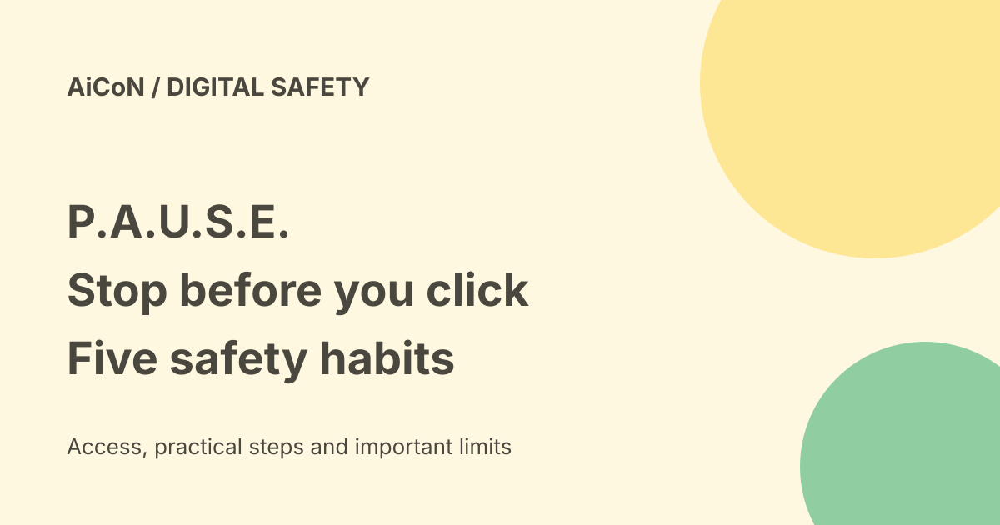

Fortinet P.A.U.S.E.: free scam-awareness habits, with India limits
P.A.U.S.E. is Fortinet's free Cybersecurity Awareness Month campaign for Canada. It teaches simple habits for suspicious links, cloned voices and unexpected requests. The habits can help readers in India, but the campaign is not an Indian government reporting service.

The five habits
- Pause: take a breath before clicking a link or downloading a file.
- Ask: was the message, call, voice or image expected? Verify who is behind it.
- URL check: inspect the real web address before clicking.
- Share with care: think about who needs your information and why.
- Escalate: tell someone you trust, report the problem and ask for help.
A URL is the web address. A familiar logo, convincing voice or well-written message cannot prove a source is real. Use a contact route you already trust rather than the phone number or link supplied in the suspicious message.
What is free?
The campaign page offers practical resources for students and educators, workplaces, and parents/families. The official launch describes scenario quizzes, short videos, posters and a downloadable Cyber First Aid Kit. Its general-public quiz returns a shareable Scam-Spotter Score. This is practice, not certification that you cannot be scammed.
School boards can request the security-awareness curriculum through the student/educator track. Workplaces can explore Fortinet Security Awareness and Training, called FortiSAT, separately. That optional commercial product is not the same as the campaign's free resources. We did not obtain a paid-training quote or enrol anyone.
How to use it
- Open the official campaign page.
- Choose the student, workplace or general-public track that fits.
- Read the habits before taking a scenario quiz.
- Use wrong answers to discuss what you would check next time.
- Read the First Aid Kit as preparation, not as a reason to delay responding to a real fraud.
We read the campaign and launch pages. We did not complete a quiz, submit a school request, download every resource or test form privacy. Read a form's terms before providing personal or school information. Never put a real password, OTP or bank detail into a practice exercise.
India is a different reporting context
Fortinet labels the campaign for Canada and links Canada's Get Cyber Safe resources. Its Canadian statistics, curriculum and reporting routes are not Indian official guidance. Use the habits as learning material; use Indian authorities and your bank for a real local incident. AiCoN's separate fraud-reporting guides explain the Indian route. This page does not promise access to Canadian institutional programmes from India.
AI scams and what a quiz cannot do
The campaign covers phishing, deepfakes, AI-generated voices and social engineering. Social engineering means manipulating a person into an action. Even a familiar-sounding voice may need a second check if it asks for money or secrets. A quiz score cannot evaluate the safety of a future link or guarantee that a message is genuine.
Frequently asked questions
Do I need to buy Fortinet software?
The campaign resources are described as free. Paid FortiSAT is a separate option.
Is this an Indian government scheme?
No. It is a vendor-run Canadian awareness campaign.
Can a teacher use it?
The campaign has a student/educator track. Check permissions, language fit and local school policy before reuse.
What changed since the earlier post?
The archived five habits and free-resource claim match the checked official sources. This guide adds the Canada-versus-India boundary, separates optional paid training and makes clear that no quiz or form was tested. It does not promise that a score, video or poster prevents every scam.
Sources: Official campaign · Fortinet launch release. Checked 8 October 2026.